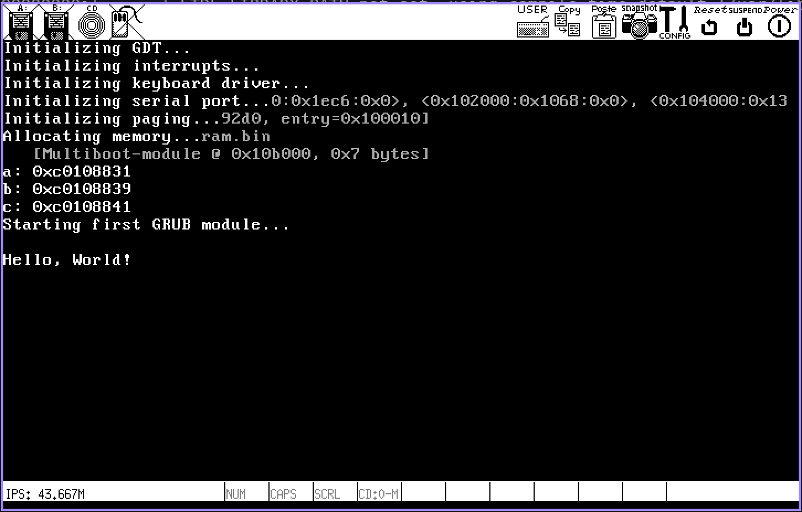
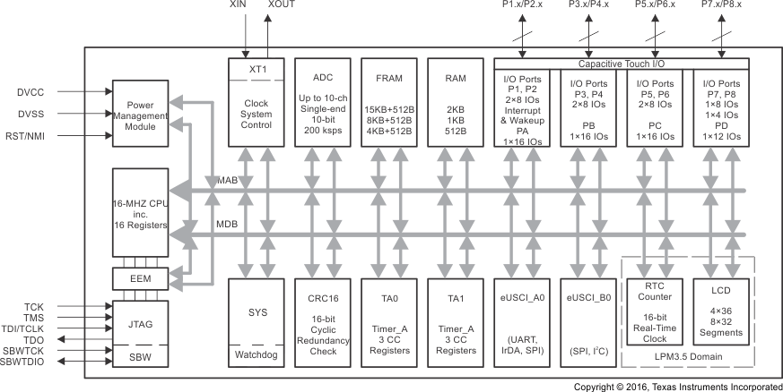

Projects

Hobby Kernel Dev
C, Assembly
Currently developing a simple x86 kernel to explore topics in operating system design and computer architecture, allowing me to get hands-on experience with the OS development process.

Intel 8080 Processor Emulator
C
Created an emulator for the Intel 8080 processor, with the goal of emulating Space Invaders. The emulator supports full instruction disassembly and emulation, as well as external hardware emulation.

XY-Platform
C
Developed a two-axis precision-controlled system, capable of navigating user entered coordinates, using the Texas Instruments MSP430FR4133 board and C, as part of my Prototyping and Instrumentation course project.
MIDI Controller
C++, Python
Developed a MIDI (Musical Instrument Digital Interface) controller using C++ for the Onion Omega board. Wrote a simple MIDI interpreter in Python to process incoming MIDI commands.
Node.js Web Game (Chaotic-Engine)
Typescript, Node.js, Socket.io, Html5 Canvas
Developed a web game engine using a Node.js server and Socket.io to connect multiple players to a single game world. Client-side rendering is done using HTML5 Canvas, and a custom graphics specification format. A simple, inheritance-based component definition system is used to facilitate the creation of new game objects.
Automatic Test Scaffolder (QAssistant)
Typescript, VSCode Api
Developed a VSCode extension that automatically creates test files and scaffolds test cases. Implemented a flexible configuration which allows support for multiple programming languages.
House of Commons Quiz Game v2 (hocq2)
Ruby on Rails, Java + Swing
Developed an efficient study tool in Ruby on Rails to help House of Commons Pages effectively recognize and name all 338 Members of Parliament. Initially built with Java and Swing but later converted to a web application for ease of access and deployment of new features.
Experience
Embedded Software Engineering Intern - Ciena
C, Python, PowerPC Assembly, Linux, GDB
Developed python scripts for GDB, including a heap-walking script for 32-bit ARM systems using Musl, a fast and lightweight libc implementation for Linux based operating systems. Productized a memory management tool (DataWatch) by developing user-space application and kernel module code to handle memory allocations. Extended existing exception handler behaviour using PowerPC assembly. Worked closely with experienced engineers to provide resources and support to effectively use on-system debugging tools.
Cloud Platform Developer - Wind River Systems
Python, Kubernetes, Docker, Helm, StarlingX
Worked with open-source technologies such as Python, Kubernetes, Docker, Helm and StarlingX to develop platform monitoring and analytics for distributed systems. Implemented and configured data processing pipelines to filter, parse and pre-process system logs. Analyzed platform metrics and logs to determine critical information used for platform monitoring and fault management. Tested application changes on various platform configurations and under different conditions to ensure proper functioning even in fault scenarios. Reviewed preliminary notes and findings with experienced engineers in order to ensure all functional requirements were captured and to verify proposed methodologies.

Back-End Developer Intern - Shopify
Ruby on Rails, React, GraphQL, Slack API
Worked on internal tools, such as the internal wiki and employee directory integration, in Ruby on Rails. Planned and implemented a Slack integration for these tools, while keeping scalability and upcoming features in mind. Contributed to crucial internal tools projects, including Shopify’s Internal App Engine for rapid app prototyping and Shopify’s research portal. Demonstrated strong communication abilities by effectively working with many in-house and remote coworkers, and through regular feature demonstrations.
Front-End Developer Intern - Shopify
React, Typescript, Scss, Jest, Enzyme
Developed enterprise commerce software solutions for merchants around the world, using React, Typescript, Html and Scss. Tested application functionality and ensured adequate test coverage using Jest and Enzyme testing frameworks. Maintained internal software tools to enable fast and reliable development. Communicated with team members to coordinate and solve complex problems. Documented best practices when designing and implementing software applications.
Mobile Application Developer (Coop) - Kinaxis
AngularJs, Typescript, Scss, Jasmine, Protractor
Brought to life new feature ideas suggested by customers and product managers using cutting edge technologies and frameworks, such as Typescript, Html, Scss, and AngularJS. Ensured code was well tested by writing Jasmine and Protractor tests, as well as keeping existing Selenium tests up to date. Solved complex implementation and optimization problems with other team members to ensure optimal performance. Demonstrated strong communication abilities through daily team meetings and regular feature demonstration days. Properly managed time while working independently in order to meet established deadlines.